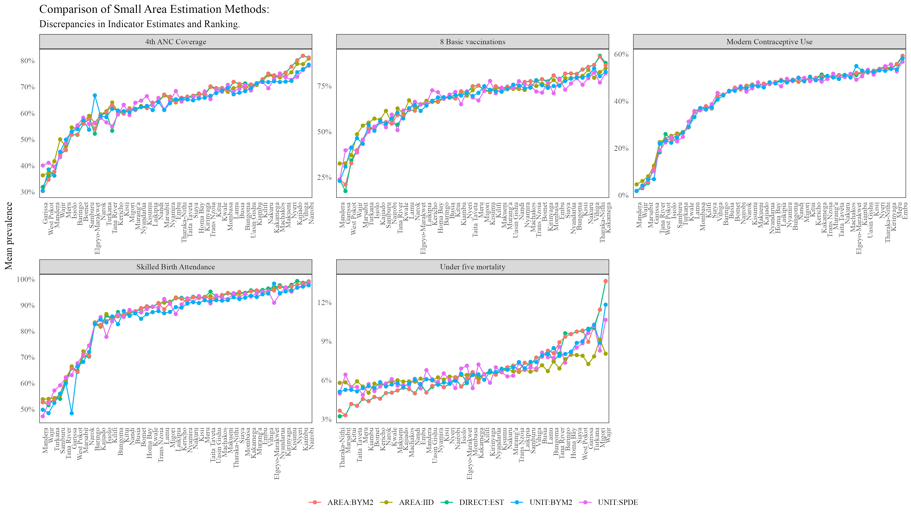
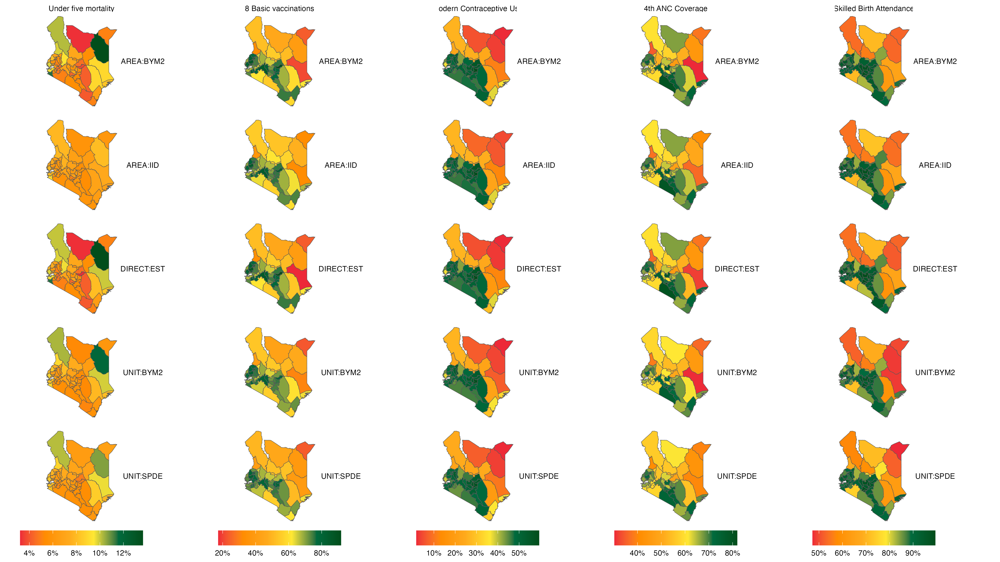
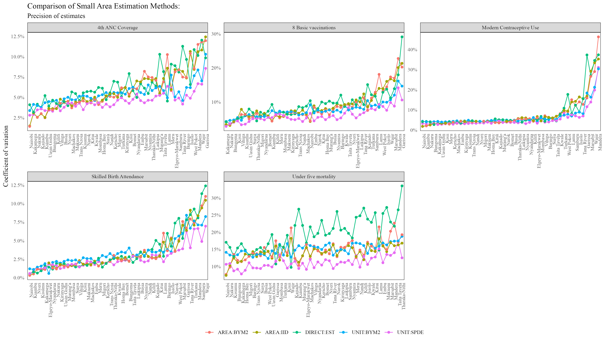

Introduction
A geographical region is termed a small area when the domain-specific data for that region are insufficient to provide direct estimates of adequate precision (Rao, John NK, and Isabel Molina, 2015)1. Small Area Estimation (SAE) is a statistical method used to estimate characteristics of interest for small spatial domains, often at a sub-national level, such as counties in Kenya.
1 Rao, John NK, and Isabel Molina. 2015. Small Area Estimation. John Wiley & Sons.
Small Area Estimation (SAE) has become increasingly valuable in survey data analysis, as demonstrated by its growing use in research and practice. The simplest SAE method, the design-based approach, uses sampling weights to account for complex survey designs and is used in the calculation of direct estimates (i.e., estimates derived solely from domain-specific survey data). In contrast, the model-based approach relies on statistical models that incorporate covariates to account for the sampling design. Model-based approaches offer the advantage of incorporating area-specific covariates as well as the potential for using promising model frameworks, for enhancing the precision of estimates.
Given the reliance on statistical models, it is essential to evaluate and compare different model-based SAE approaches to determine their effectiveness in producing estimates with high precision. This article aims to formally compare several SAE methods for mapping variables of interest in Kenya, utilizing data from the Kenya Demographic and Health Survey (KDHS) 2022. This analysis draws inspiration from previous work on disease prevalence mapping by Wakefield, Okonek, and Pedersen (2020)2.
2 Wakefield, Jonathan, Taylor Okonek, and Jon Pedersen. 2020. “Small Area Estimation for Disease Prevalence Mapping.” International Statistical Review 88 (2): 398–418.
The comparison will be based on the rankings produced by the models investigated, their disparities, their coefficients of variation to ascertain if the SAE models improved the precision of mean estimates.
Data and Methods
Data
The data for this analysis are sourced from the Kenya Demographic and Health Survey 2022 (KDHS 2022). The survey utilizes the 2019 Kenya Population and Housing Census National Master Sampling Frame (NMSF), which divides Kenya into 47 administrative units (counties) and further categorizes them into 92 strata based on rural and urban distinctions (with Nairobi and Mombasa comprising only urban areas)
A two-stage sampling process is used to select samples within each stratum. First enumeration areas/primary sampling units (PSU) are chosen independently from each stratum using a probability proportional to size (PPS) procedure. These form the survey clusters. Within each cluster, 25 households were selected using an equal probability systematic sampling procedure. This resulted in 1692 clusters (urban: 666, rural: 1,026), and a total of 42,300 households (urban: 16,650, rural: 25,650).
The sampling of the KDHS 2022 design ensures representative estimates at the national, and rural-urban levels, and for some indicators, at the county level.
The variables used in this analysis were extracted from the relevant DHS recode datasets using the surveyPrev package3
3 Dong Q, Li Z, Wu Y, Boskovic A, Wakefield J (2024). surveyPrev: Mapping the Prevalence of Binary Indicators using Survey Data in Small Areas. R package version 1.0.0, https://CRAN.R-project.org/package=surveyPrev.
?(caption)
| Variable | Description | Topic |
|---|---|---|
| Under five mortality | Probability of dying within the first 59 months | Infant & child mortality |
| Skilled birth attendance | Assistance during delivery from a skilled provider | Maternal healthcare |
| Full basic vaccination | Children 12-23 months with 8 basic vaccinations | Child health |
| Modern contraceptive use | Modern contraceptive prevalence rate (Married women currently using any modern method of contraception) | Family planning |
| 4th ANC Coverage | Antenatal visits during pregnancy: 4+ visits | Maternal Healthcare |
Methods
As discussed by Wakefield, Jonathan, Taylor Okonek, and Jon Pedersen (2020), this study implements five estimators for small area estimation:
- Direct estimation (DIRECT)
- An area-level model with independent and identically distributed (IID) random effects for counties (AREA:IID)
- An area-level model with a Besag-York-Mollié 2 (BYM2) spatial smoothing effect for counties (AREA:BYM2)
- A unit-level model with BYM2 spatial smoothing for counties (UNIT:BYM2)
- A unit-level model incorporating continuous Gaussian process smoothing (UNIT:SPDE)
For the remainder of this article, we adopt the following notation: let \(w_{ijk}\) represent the design weight for individual \(i\) within cluster \(j\) in area (county) \(k\), where the response for the selected variable is denoted by \(y_{ijk}\). The parameter of interest, \(y_k\), refers to the average prevalence of the selected indicators at the county level.
For direct estimation, the direct estimator for the mean prevalence value of the selected indicator at county \(k\) is given as:
\[ y_k = \frac{\sum_{j=1}^{J_k} \sum_{i=1}^{n_{jk}} w_{ijk} y_{ijk}}{\sum_{j=1}^{J_k} \sum_{i=1}^{n_{jk}} w_{ijk}} \]
Where: \(J_k\) is the number of clusters in county \(k\), and \(n_{jk}\) is the number of individuals in cluster \(j\) of county \(k\),
This formula represents the Horvitz-Thompson (HT) direct estimator for the mean prevalence at the county level.
The area level models: (AREA:IID) which assumes an IID heterogeneous effect for the counties, and the (AREA:BYM2) which assigns a BYM2 spatial effect to the counties use the weighted estimate (HT) as their response variable during modeling. Specifically: Let \(y_k\) be the HT direct estimate of county \(k\), and \(n_k\) be the effective sample size for county \(k\). Then:
\[y_k \sim Binomial(n_k, p_k)\]
For the area level model with IID random effect, the model is given as:
\[\text{logit}(p_k) = x_k^T\beta + u_k + v_k\]
Here:
\(y_k\) is the observed count in county \(k\)
\(n_k\) is the effective sample size for county \(k\)
\(p_k\) is the true underlying prevalence in county \(k\)
\(x_k\) is a matrix of covariates (including the intercept) for county \(k\)
\(\beta\) is a vector of coefficients
\(u_k\) is the unstructured random effect for county \(k\) given as \(u_k \sim N(0, \sigma_u^2)\). \(\sigma_u^2\) is the variance of the unstructured random effect.
The model with the BYM2 spatial smoothing effect can be viewed as an extension of the Besag-York-Mollie model given by the sum of an unstructured random effect \(u_k\), and a structured spatial random effect \(v_k\) with proper Conditional Auto-Regressive (CAR) structure4
4 Moraga, P. (2019). Geospatial health data: Modeling and visualization with R-INLA and shiny. Chapman and Hall/CRC.
The model formulation is as follows:
\[\text{logit}(p_k) = x_k^T\beta + b_k\]
The structured spatial random effect \(b_k\) is given as:
\[b_k = \frac{1}{\tau_b}(\sqrt{1-\phi} \ v_k^{*} + \sqrt{\phi} \ u_k^{*})\] Here: \(u_k^{*}\) and \(v_k^{*}\) are the standardized versions of \(u_k\) and \(v_k\) to have variance 15. \(\phi \in [0,1]\) is a mixing parameter quantifying the proportion of marginal variance explained by the spatial component. \(\tau_b\) is the marginal precision parameter.
5 Simpson, D., Rue, H., Riebler, A., Martins, T. G., & Sørbye, S. H. (2017). Penalising model component complexity: A principled, practical approach to constructing priors.
For the unit-level models (UNIT:BYM2 & UNIT:SPDE), we consider the primary sampling units (PSUs) as the units of analysis. Let \(y_{jk}\) denote the count of “successes” for a selected indicator, and \(n_{jk}\) represent the sample size for cluster \(j\) in county \(k\).
The general model formulation is as follows:
\[y_{jk} \sim \text{Beta-Binomial}(n_{jk}, p_{jk}, \lambda)\] \[\text{logit}(p_{jk}) = x_{jk}^T\beta + z(s_{jk})\gamma + \psi(s_{jk})\]
Where:
\(p_{jk}\) is the probability of success for cluster \(j\) in county \(k\)
\(x_{jk}\) is a vector of unit-level covariates at location \(s_{jk}\)
\(\beta\) is the corresponding vector of fixed effect coefficients
\(z(s_{jk})\) represents the stratum indicator for cluster \(j\) in county \(k\)
\(\gamma\) is the fixed effect coefficient for the stratum
\(\psi(s_{jk})\) is a spatial random effect at location \(s_{jk}\)
In the UNIT:SPDE model, the spatial random effect \(\psi(s_{jk})\) is modeled as a zero-mean Gaussian process with a Matérn covariance function: \(\psi(s_{jk}) \sim \mathcal{GP}(0, \Sigma)\). Here, \(\Sigma\) is the covariance matrix derived from the Matérn covariance function and is characterized by parameters controlling the range of spatial dependency and the smoothness of the spatial field. This model is then used to make predictions for the selected indicator variable at a \(5 km^2\) grid across Kenya.
For the unit level model (UNIT:BYM2) implementing a BYM2 spatial random effect, the term \(\psi(s_{jk})\) is a spatially stuctured random effect as implemented as in the AREA:BYM2 section above.
For the unit-level models that required the stratification variable \(z(\cdot)\) as a covariate, we first developed a model to predict urban/rural classification for Kenya using the DHS GPS dataset. This was done in two steps, and incorporated the covariates: night light, travel time to cities with populations of 10,000-20,000, and population density. Initially, we use a flexible Multivariate Adaptive Regression Splines (MARS) model allowing for up to 100 knots and all second-order interaction effects. Forward search was used to prune the model. The predictions from this MARS model served as an offset linear predictor term in a final geostatistical model, which made predictions at a \(5 \ km^2\) resolution. These predictions were then used as the \(z(\cdot)\) covariate in the unit-level models, representing the probability that a cluster is urban.
For the unit-level models, since the primary sampling units (PSUs) are the units of analysis rather than the areas (counties), an aggregation step was required to obtain mean estimates at the county level.
In the UNIT:SPDE model which includes a continuous spatial random effect (Gaussian process), the aggregation was done using population weighting. The population dataset used was the UN-adjusted 2020 gridded population data from WorldPop6 as follows:
6 WorldPop (www.worldpop.org - School of Geography and Environmental Science, University of Southampton; Department of Geography and Geosciences, University of Louisville; Departement de Geographie, Universite de Namur) and Center for International Earth Science Information Network (CIESIN), Columbia University (2018). Global High Resolution Population Denominators Project - Funded by The Bill and Melinda Gates Foundation (OPP1134076). https://dx.doi.org/10.5258/SOTON/WP00675
\[ p_k = \sum_{i=1}^{g_i} p(s_i) \cdot q(s_i) \cdot \mathbf{1}(s_i \in k) \]
Where \(p(s_i)\) represents the mean estimate at location \(s_i\) (a \(5 km^2\) grid), \(q(s_i)\) is the population density at location \(s_i\) (normalized per county \(k\)), and \(g_i\) is the total number of grid cells across the spatial domain (country).
For the UNIT:BYM2 model, aggregation was done using a weighted averaging approach. Following (Paige, Fuglstad, Riebler, & Wakefield, 2022)7, \(a = 500\) samples for the county crossed with stratum were drawn from the model’s posterior distribution as follows:
7 Paige, J., Fuglstad, G. A., Riebler, A., & Wakefield, J. (2022). Design-and model-based approaches to small-area estimation in a low-and middle-income country context: comparisons and recommendations. Journal of Survey Statistics and Methodology, 10(1), 50-80.
\[\hat{P}_S^a = \frac{1}{J_k^s} \ \sum_{j:s[c] = S}{p_j^a}\] Where: \(\hat{P}_S^a\) is the a-th drawn predicted probability from the posterior of stratum \(S\), \(J_k^s\) is the number of clusters (Enumeration Areas) in stratum \(S\) of county \(k\), \(s[c]\) is the stratum of cluster \(j\) and \(p_j^a\) is the predicted probability of cluster \(j\).
Generating draws from the posterior distribution of the counties amounts to aggregating the stratum draws, using information about the proportion of each county that is urban/rural. This information was drawn from the 2019 Kenya Population and Housing Census (KPHC) 2019. This is illustrated below:
\[{p_k^a} = (q_{kU} * p_{U}^a) + (q_{kR} * p_{R}^a)\]
Here: \(q_{kU}\) and \(q_{kR}\) are the proportions for the target populations in the counties which are urban and rural respectively.
To fully specify the models, we used penalized complexity (PC) priors similar to those used by Wakefield, Jonathan, Taylor Okonek, and Jon Pedersen (2020). For the BYM2 models, the PC priors were set such that the marginal standard deviation has a 0.01 probability of exceeding 0.5, while the mixing parameter \(\phi\) has a 0.5 probability of being greater than 2/3. For the UNIT:SPDE model, we imposed a prior on the spatial range parameter such that there is a 0.95 probability that the range is less than 50 kilometers. Additionally, we set the prior for the marginal standard deviation of the spatial field so that there is a 50% probability that it is less than 1.
All analyses were performed in R version 4.3.28, using packages including Tidyverse, R-INLA, surveyPrev, sf, raster, earth, tidyr, and patchwork.
8 R Core Team (2023). R: A Language and Environment for Statistical Computing. R Foundation for Statistical Computing, Vienna, Austria. https://www.R-project.org/.
Results
In this section, we present the comparative performance of the five methods described in the Methods section. The results are evaluated based on the rankings, the precision of the estimates using the coefficient of variation (CV), and the influence of spatial autocorrelation, sample size, and neighborhood structure on precision.
The plot of rankings and a prevalence map are shown below:

At the county level, all the methods produced almost similar rankings with an exception of Under-five mortality.

From the above map, it is evident that for variables such as Modern Contraceptive Usage and Skilled Birth Attendance, there is strong visual similarity across the five methods, while for variables such as Under-five mortality, there exists some disparity in the plots produced using the different methods.
The coefficients of variation plot is shown below:

From the plot above, the UNIT:SPDE model seems to be having the lowest Coefficient of Variation (CV). For variables such as Modern Contraceptive Usage, the five models had relatively similar CV estimates across all counties, while for variables such as Under Five Mortality and 4th ANC Coverage, there is greater difference in the CV graphs produced.
In this article, we compared five model-based small area estimation (SAE) approaches using data from five indicators in the 2022 Kenya Demographic and Health Survey (KDHS). The findings suggest that the five models produced similar mean estimates and had comparable rankings for most of the variables. Variables such as skilled birth attendance and modern contraceptive use showed strong agreement among the models, while under-five mortality displayed lower agreement. Overall, the UNIT:SPDE models exhibited lower coefficients of variation across counties for all variables, though the CV graphs indicated that the models produced similar results.
These findings suggest that the KDHS 2022 data were sufficiently powered to generate estimates at the county level, as the model-based approaches did not significantly improve upon the direct estimates. Given that direct estimation remains the gold standard in SAE, my recommendation is to use direct estimation methods rather than model-based estimates for the counties and the five variables analyzed.
Further research is needed to assess the viability of model-based approaches for generating estimates at the sub-county level and to compare these approaches in greater depth.
References
Paige, J., Fuglstad, G. A., Riebler, A., & Wakefield, J. (2022). Design-and model-based approaches to small-area estimation in a low-and middle-income country context: comparisons and recommendations. Journal of Survey Statistics and Methodology, 10(1), 50-80.
Simpson, D., Rue, H., Riebler, A., Martins, T. G., & Sørbye, S. H. (2017). Penalising model component complexity: A principled, practical approach to constructing priors.
Moraga, P. (2019). Geospatial health data: Modeling and visualization with R-INLA and shiny. Chapman and Hall/CRC.
Wakefield, Jonathan, Taylor Okonek, and Jon Pedersen. 2020. “Small Area Estimation for Disease Prevalence Mapping.” International Statistical Review 88 (2): 398–418.
Rao, John NK, and Isabel Molina. 2015. Small Area Estimation. John Wiley & Sons.
Package references
R Core Team (2023). R: A Language and Environment for Statistical Computing. R Foundation for Statistical Computing, Vienna, Austria. https://www.R-project.org/.
Dong Q, Li Z, Wu Y, Boskovic A, Wakefield J (2024). surveyPrev: Mapping the Prevalence of Binary Indicators using Survey Data in Small Areas. R package version 1.0.0, https://CRAN.R-project.org/package=surveyPrev.
Wickham H, Miller E, Smith D (2023). haven: Import and Export ‘SPSS’, ‘Stata’ and ‘SAS’ Files. R package version 2.5.4, https://CRAN.R-project.org/package=haven.
Havard Rue, Sara Martino, and Nicholas Chopin (2009), Approximate Bayesian Inference for Latent Gaussian Models Using Integrated Nested Laplace Approximations (with discussion), Journal of the Royal Statistical Society B, 71, 319-392.
Thiago G. Martins, Daniel Simpson, Finn Lindgren and Havard Rue (2013), Bayesian computing with INLA: New features, Computational Statistics and Data Analysis, 67(2013) 68-83
Finn Lindgren, Havard Rue (2015). Bayesian Spatial Modelling with R-INLA. Journal of Statistical Software, 63(19), 1-25. URL http://www.jstatsoft.org/v63/i19/.
Wickham H, Averick M, Bryan J, Chang W, McGowan LD, François R, Grolemund G, Hayes A, Henry L, Hester J, Kuhn M, Pedersen TL, Miller E, Bache SM, Müller K, Ooms J, Robinson D, Seidel DP, Spinu V, Takahashi K, Vaughan D, Wilke C, Woo K, Yutani H (2019). “Welcome to the tidyverse.” Journal of Open Source Software, 4(43), 1686. doi:10.21105/joss.01686 https://doi.org/10.21105/joss.01686.
Pebesma, E., & Bivand, R. (2023). Spatial Data Science: With Applications in R. Chapman and Hall/CRC. https://doi.org/10.1201/9780429459016
Pebesma, E., 2018. Simple Features for R: Standardized Support for Spatial Vector Data. The R Journal 10 (1), 439-446, https://doi.org/10.32614/RJ-2018-009
Hijmans R (2023). raster: Geographic Data Analysis and Modeling. R package version 3.6-26, https://CRAN.R-project.org/package=raster.
Kuhn M, Wickham H, Hvitfeldt E (2024). recipes: Preprocessing and Feature Engineering Steps for Modeling. R package version 1.0.10, https://CRAN.R-project.org/package=recipes.
Data references
WorldPop (www.worldpop.org - School of Geography and Environmental Science, University of Southampton; Department of Geography and Geosciences, University of Louisville; Departement de Geographie, Universite de Namur) and Center for International Earth Science Information Network (CIESIN), Columbia University (2018). Global High Resolution Population Denominators Project - Funded by The Bill and Melinda Gates Foundation (OPP1134076). https://dx.doi.org/10.5258/SOTON/WP00675
KNBS and ICF. 2023. Kenya Demographic and Health Survey 2022. Nairobi, Kenya, and Rockville, Maryland, USA: KNBS and ICF.